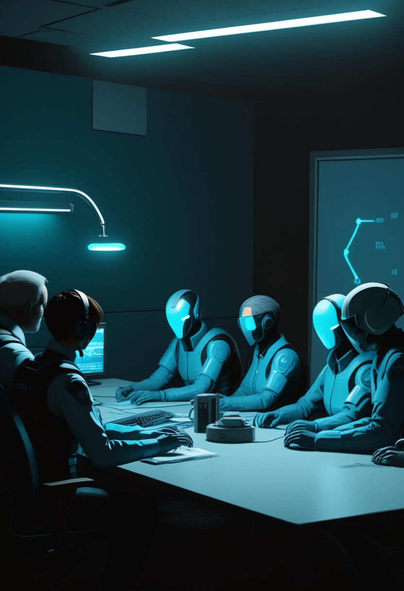
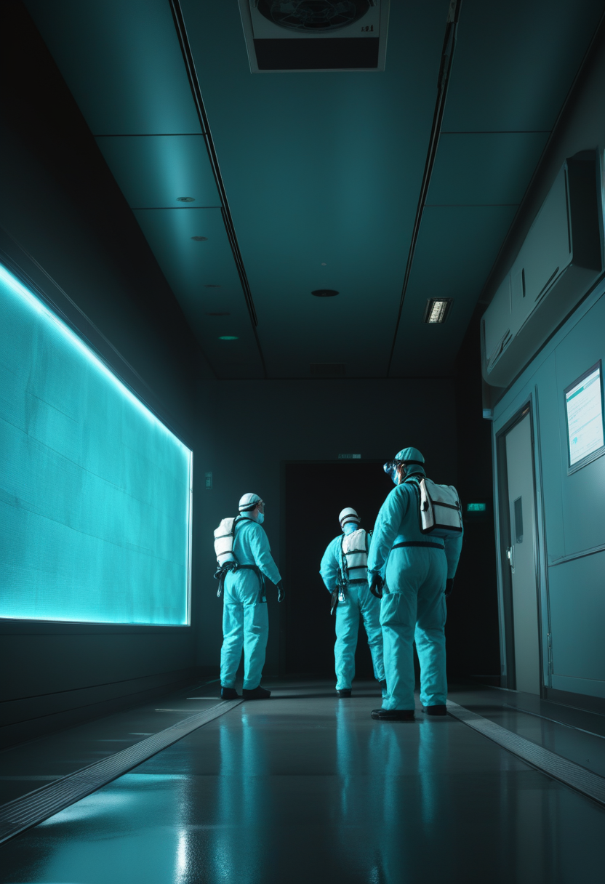
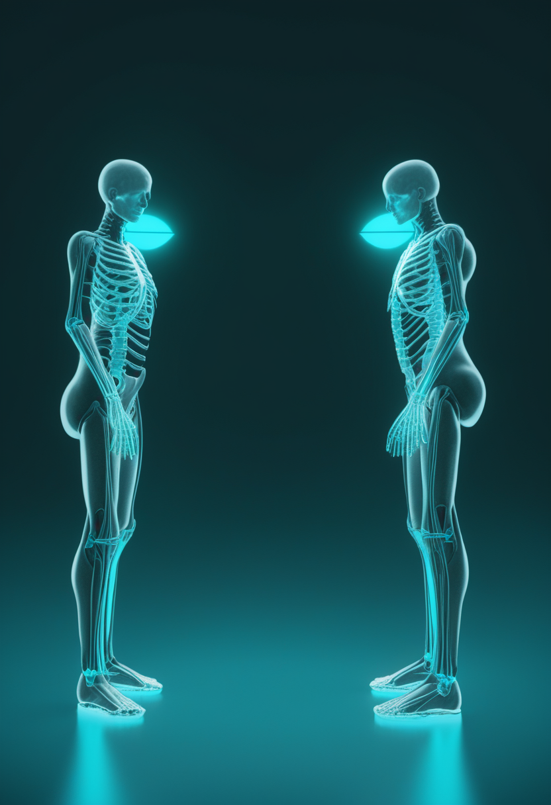
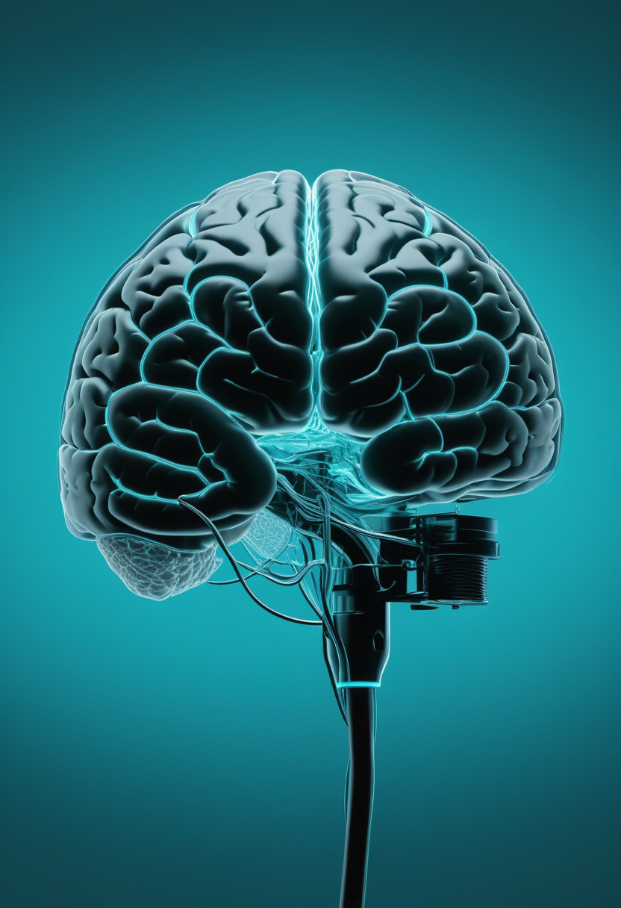

金曜日の便り。WHOは7月14日、DRCのブンディブギョ型エボラが7月13日時点で確定2,011例・死者754例に達したと発表、前号比で48例・35人の増加となった。同じ頃、感染対応の最前線であるブニア総合病院などで給与未払いに抗議する医療従事者のストライキが拡大し、人道支援団体の米国人職員がこの流行で2人目のエボラ感染者としてドイツへ緊急搬送されるなど、対応の担い手自身が試される局面が重なった。BCIの世界では、Rice大学発のMotif Neurotechが治療抵抗性うつ病を対象とする脳インプラントの臨床試験にFDA承認を得て「心を整える」BCIという新領域が動き出し、血管経由の低侵襲デバイスを開発するSynchronは2億ドルの調達を追い風に埋め込み型BCI初のFDA本承認を照準に据える。宇宙では、老朽化したNASAの観測衛星スウィフトを軌道救出する商業機「LINK」が打ち上げられ、JAXAのはやぶさ2は小惑星「とりふね」への接近撮影に成功、CERNは大型ハドロン衝突型加速器を次期改修に向けた長期停止に入れた。SMAの世界ではゾルゲンスマの実臨床データが長期の運動機能改善を裏付け、サラネルセンの治験は乳児から成人まで年齢層を広げる体制が整った。人類史とAI意識を巡る話題では、ミツバチとChatGPTに共通の意識判定枠組みを適用する研究や、ネアンデルタール人由来とみられる「言語スイッチ」の発見が、「何が意識や言葉を生むか」という同じ問いに別角度から迫っている。

7/16号の続報 ― WHOは7月14日、DRCのブンディブギョ型エボラ流行が7月13日時点で確定2,011例・死者754例に達したと発表した。前号(1,963例・719例)から48例・35人の増加で、5月15日の発生確認から2カ月を超えてなお拡大が続く。実際の感染規模は公式統計の2〜4倍に上る可能性があるとWHOは重ねて警告した。同じ頃、感染対応の最前線であるイトゥリ州ブニア総合病院などで、疫学者や埋葬作業者を含む医療従事者数十人が流行開始以来の給与未払いを理由にストライキへ突入。さらに人道支援団体で活動していた米国人職員がこの流行で2人目のエボラ感染者となり、7月13日にドイツへ緊急搬送された。症例数の拡大に加え、対応を支える人と体制そのものが揺らぎ始めている。
MDA臨床科学会議2026で、ノバルティスのゾルゲンスマ(オナセムノゲン アベパルボベク)を投与された257例(投与時年齢中央値3カ月)のRESTOREレジストリ解析が発表された。運動機能評価スケールCHOP-INTENDで約4分の3の患者が4点以上改善し、約9割が40点以上を達成・維持した。髄腔内投与版のItvismaもSTEER試験64週データでHFMSEが平均2.41→2.75点まで改善するなど、長期の効果持続を示すデータが積み上がっている。

7/15号の続報 ― Biogenの次世代SMA治療薬候補サラネルセンを検証する第3相3試験の詳細が明らかになった。症状未発症の生後6週間までの乳児30人を対象とする「STELLAR-1」は募集中、ゾルゲンスマ投与後の乳児42人を対象とする「STELLAR-2」は2026年後半に開始予定、15〜60歳の青年・成人90人を対象とする「SOLAR」は数カ月以内に開始予定で、乳児から成人まで年齢層を網羅する体制が固まった。
遺伝子治療は投与から数年を経てなお運動機能の改善が続くという長期データが積み上がる一方、次世代薬の治験は乳児から成人まで年齢層を広げつつ、実施体制の骨格が着実に固まりつつある。
Rice大学発のMotif Neurotechは、既存の薬物療法に反応しない治療抵抗性うつ病を対象とした治療用BCI「Motif XCSシステム」について、米FDAから治験機器適用免除(IDE)の承認を取得したと発表した。ブルーベリー大の埋め込み型デバイスを20分の外来手術で装着し、うつ症状に関わる脳領域に微弱な電気刺激を届ける仕組みで、ベイラー医科大学やニューヨーク大学など複数の医療機関でRESONATE早期実行可能性試験が進む。

血管経由の低侵襲BCI「Stentrode」を開発するSynchronは、シリーズDで2億ドルを調達し累計調達額を3億4,500万ドルへ伸ばした。開頭手術を伴わず頸静脈からステント状電極を挿入する方式で、2026年中に開始予定のピボタル試験が成功すれば、永久埋め込み型BCIとして初の米FDA本承認(PMA)申請に道を開く。
運動機能の代替という「できることを増やす」BCIに加え、うつ病治療という「心を整える」BCIが臨床試験段階に入った。侵襲度も適応も異なる複数のアプローチが、それぞれのペースでFDA承認という同じ関門に向かっている。
7/16号の続報 ― WHOは7月14日、DRCのブンディブギョ型エボラ流行が7月13日時点で確定2,011例・死者754例に達したと発表した。前号(1,963例・719例)から48例・35人の増加。5月15日の発生確認から2カ月を超えてなお拡大が続き、実際の感染規模は公式統計の2〜4倍に上る可能性があるとWHOは重ねて警告した。
感染拡大の最前線であるイトゥリ州ブニア総合病院やルワンパラ総合病院で、疫学者や埋葬作業者を含む医療従事者数十人が、流行開始以来の給与未払いを理由にストライキに入った。隔離病床や治療センターの運営能力が試される中、対応要員の士気維持という新たな課題が浮上している。
米CDCは、DRCで人道支援活動に従事していた米国人が7月10日にブンディブギョウイルスの陽性反応を示し、7月13日にドイツへ緊急搬送されたと明らかにした。同流行での米国人感染者は今回が2人目で、1人目は治療にあたっていた医師だった。国際的な人道支援要員への感染拡大は、流行対応の担い手不足という別の懸念を映し出す。
エボラは症例数の拡大だけでなく、対応の担い手自身が疲弊し始めている局面に入った。給与未払いのストライキと国際人道要員への感染拡大は、医療インフラの持続可能性という、統計の裏側にある課題を浮き彫りにする。
NASAと新興企業Katalyst Space Technologiesは7月3日、老朽化が進み大気圏再突入が迫っていたニール・ゲーレルス・スウィフト天文衛星を救出するため、軌道上ドッキング機「LINK」を打ち上げた。7月下旬に接近・把持を行い、その後60日かけて現在の2倍の高度(約600km)まで押し上げる計画で、成功すれば政府衛星への商業機初ドッキングとなる。
JAXAのはやぶさ2(拡張ミッション中)は7月5日18時30分(日本時間)、地球から約1億km離れた小惑星「とりふね」(全長約450m)に約800mまで接近するフライバイを実施し、可視光・赤外・熱・LIDARの各データを取得した。2つの塊が連なる「雪だるま型」の姿が鮮明に捉えられ、小天体の軌道を意図的に変える技術実証にもつながる観測とされる。
欧州原子核研究機構(CERN)は7月、大型ハドロン衝突型加速器(LHC)を約20年の稼働の後、次期高輝度化改修に向けた「長期停止3(LS3)」に入れた。ATLAS・CMS両実験の高度化作業の遅れなどから、高輝度LHC(HL-LHC)の本格稼働開始は当初計画から約1年後ろ倒しの2030年6月にずれ込む見通し。
老朽衛星の軌道再生、小天体への接近観測、そして次世代加速器へ向けた雌伏の時――宇宙と素粒子物理の最前線は、それぞれ異なる時間軸で「次の10年」への準備を進めている。
2026年6月、認知科学の研究者らがミツバチの脳とChatGPTのようなAIシステムに、共通の意識判定フレームワークを初めて適用した。判断基準は外部からの行動観察ではなく、競合する目標を調整する仕組みやフィードバックによる内部更新など「内部機構」の有無。この枠組みの下では現在のAIは意識を持つ可能性が低い一方、ミツバチの採餌行動は構造的には人間の意識により近いと評価されうるという。
米アイオワ大学の研究チームがScience Advances誌(2026年6月)に発表した研究によると、ゲノムの0.1%にも満たない微小な遺伝子制御領域が、言語能力に対しゲノム平均の188倍もの説明力を持つことが判明した。この「音量つまみ」のような調整領域は現生人類とネアンデルタール人が分岐する前から存在しており、既知のFOXP2遺伝子などと共に働くとみられる。
「何が意識を生むか」も「何が言葉を生んだか」も、答えは行動の外見ではなく内部の仕組みに宿るという共通の視座が今週浮かび上がった。ハチの脳もヒトの祖先の遺伝子も、見過ごされてきた小さな構造の中に大きな手がかりを隠していた。
2026年7月17日、DRCのエボラは確定2,011例・死者754例に達し、対応の最前線では給与未払いのストライキと2人目の米国人感染者という、統計の裏側にある課題が同時に浮かび上がった。それでもブニアやルワンパラの病院には仕事に戻る医療従事者がおり、老朽衛星を救おうとする商業機が打ち上がり、次世代の治療薬治験は乳児から成人まで着実に体制を整えつつある。ミツバチの脳にもネアンデルタール人の遺伝子にも、意識や言葉の起源を解く手がかりが見過ごされたまま眠っていた――見えない構造への理解は、危機への警戒と並んで、今週もまた静かに前進している。
では、また明日の朝に。 — JaH